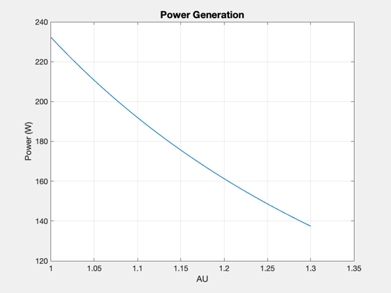

Design a mission to visit an asteroid with a small satellite
The satellite uses an ion engine for a low-thrust spiral from the Earth to the asteroid. Try leaving from different Earth altitudes.
See also BuildAsteroidSat, Constant, CreateTable, Plot2D, Date2JD, LTSpiral, LowThrustEscape, BatterySize, RocketEquation
Contents
%-------------------------------------------------------------------------- % Copyright (c) 2012 Princeton Satellite Systems, Inc. % All rights reserved. %-------------------------------------------------------------------------- % Since Version 2015.1 % 2016.1 - update parking altitude to GEO %--------------------------------------------------------------------------
General data
Constants
%---------- c = Constant('speed of light'); mu = Constant('mu earth'); muSun = Constant('mu sun'); aU = Constant('au'); g = 9.806; rhoXenon = 2750; rhoRCS = 1240; % HPGP propellant % Mission date %------------- date = [2015 5 7 0 0 0]; jD = Date2JD(date); % Total mass %----------- mTotal = 27; % 3U x 3U x 3U [kg] % Orbits %------- aAsteroid = 1.3; % Distance from Sun [au] hParking = 35789; % Parking orbit [km] dVRCS = 150; % A guess [m/s] % Link %----- effConv = 0.8; powerKa = 2; % [W] fComm = 34e9;
Propulsion system
%------------------- thrustRCS = 0.5; % N iSpRCS = 235; % sec thrustIon = 1.9; % mN Isp = 2800; % sec % RCS - reaction control system %----- mRatio = exp(dVRCS/(iSpRCS*9.806)); mFRCS = mTotal*(mRatio-1)/mRatio; vRCS = mFRCS/rhoRCS; nTanks = 2; % Two tanks rRCS = (0.75*vRCS/nTanks/pi)^(1/3);
Power system
%-------------- nPanels = 4; panelLength = 0.3; % m panelWidth = 0.3; % m solarPanelEff = 0.295; solarConstant = 1367; % W/m2 a = linspace(1,aAsteroid); solarFlux = solarConstant*(1./a).^2; power = 2*effConv*nPanels*panelLength*panelWidth*solarPanelEff*solarFlux; Plot2D(a,power,'AU','Power (W)','Power Generation') % Battery %-------- dOD = 0.8; % depth of discharge sma = 6378.165 + hParking; inc = 28.4667*pi/180; [massBattery, volumeBattery, capacityBattery] = BatterySize( sma, inc, power(1), jD, dOD );
Ion engine maneuvers
%---------------------- % Earth spiral from hParking %--------------------------- aEarth = aU; r = 6378.165 + hParking; dVSpiral = LowThrustEscape( mu, r ); dVTransfer = LTSpiral( aEarth, aAsteroid*aU, [], muSun ); dVTotal = 2*dVSpiral+2*dVTransfer; % include return trip % use the rocket equation to get the fuel mass massFinal = RocketEquation( 1000*dVTotal, mTotal, Isp*g ); mF = mTotal-massFinal; % Fuel tank sizing %----------------- vXenon = mF/rhoXenon; rXenon = (0.75*vXenon/pi)^(1/3);
Create a table of the results
%------------------------------- k = 1; s = {}; s{k,1} = '\textbf{Mission Plan}'; k = k + 1; s{k,1} = 'Parking Altitude'; s{k,2} = hParking; s{k,3} = 'km'; k = k + 1; s{k,1} = 'Maximum Heliocentric Orbit'; s{k,2} = aAsteroid; s{k,3} = 'AU'; k = k + 1; s{k,1} = 'Earth Escape Delta V'; s{k,2} = dVSpiral; s{k,3} = 'km/s'; k = k + 1; s{k,1} = 'Transfer Delta V'; s{k,2} = dVTransfer; s{k,3} = 'km/s'; k = k + 1; s{k,1} = '\textbf{Power Subsystem}'; k = k + 1; s{k,1} = 'Maximum Power'; s{k,2} = power(1); s{k,3} = 'W'; k = k + 1; s{k,1} = 'Minimum Power'; s{k,2} = power(end); s{k,3} = 'W'; k = k + 1; s{k,1} = 'Solar cells'; s{k,2} = 'Emcore ZTJ'; k = k + 1; s{k,1} = 'Solar cell efficiency'; s{k,2} = solarPanelEff; k = k + 1; s{k,1} = 'Battery mass'; s{k,2} = massBattery; s{k,3} = 'kg'; k = k + 1; s{k,1} = 'Battery volume'; s{k,2} = volumeBattery; s{k,3} = 'L'; k = k + 1; s{k,1} = 'Battery capacity'; s{k,2} = capacityBattery; s{k,3} = 'W-h'; k = k + 1; s{k,1} = '\textbf{Mass}'; k = k + 1; s{k,1} = 'Mass Total'; s{k,2} = mTotal; s{k,3} = 'kg'; k = k + 1; s{k,1} = '\textbf{Communications Subsystem}'; k = k + 1; s{k,1} = 'Communications'; s{k,2} = 'Ka Band'; k = k + 1; s{k,1} = 'Comm Power'; s{k,2} = powerKa; s{k,3} = 'W'; k = k + 1; s{k,1} = '\textbf{Propulsion Subsystem}'; k = k + 1; s{k,1} = 'Ion Engine Fuel'; s{k,2} = 'Xenon'; k = k + 1; s{k,1} = 'Ion Engine Thrust'; s{k,2} = thrustIon; s{k,3} = 'mN'; k = k + 1; s{k,1} = 'Ion Engine Delta V'; s{k,2} = dVTotal; s{k,3} = 'km/s'; k = k + 1; s{k,1} = 'Ion Engine Specific Impulse'; s{k,2} = Isp; s{k,3} = 's'; k = k + 1; s{k,1} = 'Xenon fuel mass'; s{k,2} = mF; s{k,3} = 'kg'; k = k + 1; s{k,1} = 'Xenon tank diameter'; s{k,2} = 2*rXenon*100; s{k,3} = 'cm'; k = k + 1; s{k,1} = 'RCS Thruster Fuel'; s{k,2} = 'HPGP'; k = k + 1; s{k,1} = 'RCS Thruster Thrust'; s{k,2} = thrustRCS; s{k,3} = 'N'; k = k + 1; s{k,1} = 'RCS Delta V'; s{k,2} = dVRCS; s{k,3} = 'm/s'; k = k + 1; s{k,1} = 'RCS Isp'; s{k,2} = iSpRCS; s{k,3} = 'm/s'; k = k + 1; s{k,1} = 'RCS fuel mass'; s{k,2} = mFRCS; s{k,3} = 'kg'; k = k + 1; s{k,1} = 'RCS tank diameter'; s{k,2} = 2*rRCS*100; s{k,3} = 'cm'; k = k + 1; CreateTable(s); %-------------------------------------- % PSS internal file version information %-------------------------------------- % $Id: 481b9faae2ac4d0b1584fa9233ad34851730e504 $
\textbf{Mission Plan} - -
Parking Altitude - 3.579e+04 - km
Maximum Heliocentric Orbit - 1.3 - AU
Earth Escape Delta V - 3.075 - km/s
Transfer Delta V - 3.662 - km/s
\textbf{Power Subsystem} - -
Maximum Power - 232.3 - W
Minimum Power - 137.4 - W
Solar cells - Emcore ZTJ -
Solar cell efficiency - 0.295 -
Battery mass - 8.068 - kg
Battery volume - 4.357 - L
Battery capacity - 1089 - W-h
\textbf{Mass} - -
Mass Total - 27 - kg
\textbf{Communications Subsystem} - -
Communications - Ka Band -
Comm Power - 2 - W
\textbf{Propulsion Subsystem} - -
Ion Engine Fuel - Xenon -
Ion Engine Thrust - 1.9 - mN
Ion Engine Delta V - 13.47 - km/s
Ion Engine Specific Impulse - 2800 - s
Xenon fuel mass - 10.47 - kg
Xenon tank diameter - 19.37 - cm
RCS Thruster Fuel - HPGP -
RCS Thruster Thrust - 0.5 - N
RCS Delta V - 150 - m/s
RCS Isp - 235 - m/s
RCS fuel mass - 1.702 - kg
RCS tank diameter - 10.94 - cm